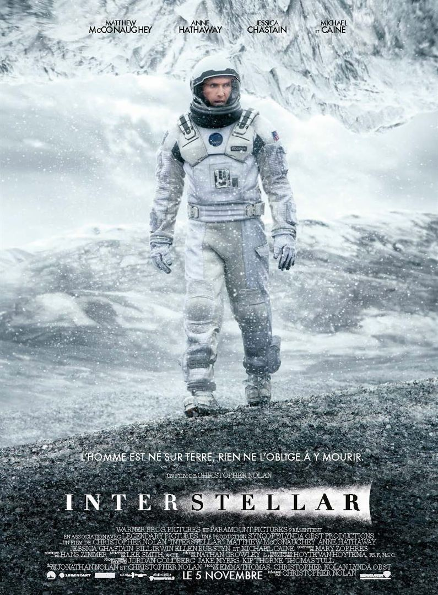

Mes films préféres
- Interstellar
- Le pacte des loups
- Le seigneur des anneaux - la trilogie
- Autant en emporte le vent
- La folie des grandeurs
- La guerre des étoiles
Le film raconte les aventures d’un groupe d’explorateurs qui utilisent une faille récemment découverte dans l’espace-temps afin de repousser les limites humaines et partir à la conquête des distances astronomiques dans un voyage interstellaire.
- Matthew McConaughey
- Anne Hathaway
- Michael Caine

En 1766, une bête mystérieuse sévit dans les montagnes du Gévaudan et fait de nombreuses victimes, sans que quiconque puisse l'identifier ou la tuer. Les gens ont peur. C'est un monstre surgi de l'enfer ou une punition de Dieu. L'affaire prend rapidement une dimension nationale et porte atteinte à l'autorité du Roi. Le chevalier Grégoire De Fronsac, naturaliste de surcroît, est alors envoyé dans la région du Gévaudan pour dresser le portrait de la bête. Bel esprit, frivole et rationnel, il est accompagné de l'étrange et taciturne Mani, un indien de la tribu des Mohawks. Ces derniers s'installent chez le Marquis Thomas d'Apcher. Au cours d'une soirée donnée en son honneur, Fronsac fait la connaissance de Marianne De Morangias ainsi que de son frère Jean-François, héritiers de la plus influente famille du pays. Fronsac se heurte bientôt à l'animosité des personnages influents de la région.
- Samuel Le Bihan
- Vincent Cassel
- Mark Dacascos

Dans ce chapitre de la trilogie, le jeune et timide Hobbit, Frodon Sacquet, hérite d'un anneau. Bien loin d'être une simple babiole, il s'agit de l'Anneau Unique, un instrument de pouvoir absolu qui permettrait à Sauron, le Seigneur des ténèbres, de régner sur la Terre du Milieu et de réduire en esclavage ses peuples. À moins que Frodon, aidé d'une Compagnie constituée de Hobbits, d'Hommes, d'un Magicien, d'un Nain, et d'un Elfe, ne parvienne à emporter l'Anneau à travers la Terre du Milieu jusqu'à la Crevasse du Destin, lieu où il a été forgé, et à le détruire pour toujours. Un tel périple signifie s'aventurer très loin en Mordor, les terres du Seigneur des ténèbres, où est rassemblée son armée d'Orques maléfiques... La Compagnie doit non seulement combattre les forces extérieures du mal mais aussi les dissensions internes et l'influence corruptrice qu'exerce l'Anneau lui-même. L'issue de l'histoire à venir est intimement liée au sort de la Compagnie.
- Elijah Wood
- Viggo Mortensen
- Ian McKellen
En Georgie, en 1861, Scarlett O'Hara est une jeune femme fière et volontaire de la haute société sudiste. Courtisée par tous les bons partis du pays, elle n'a d'yeux que pour Ashley Wilkes malgré ses fiançailles avec sa douce et timide cousine, Melanie Hamilton. Scarlett est pourtant bien décidée à le faire changer d'avis, mais à la réception des Douze Chênes c'est du cynique Rhett Butler qu'elle retient l'attention...
- Vivien Leigh
- Clark Gable
- Leslie Howard
Don Salluste profite de ses fonctions de ministre des Finances du roi d'Espagne pour raqueter le peuple. Mais la Reine qui le déteste réussit à le chasser de la cour. Ivre de vengeance, il décide de la compromettre. Son neveu Don César ayant refusé de se mêler du complot,c'est finalement le valet de Don Salluste, Blaze, transi d'amour pour la souveraine, qui tiendra le rôle du Prince charmant. Malheureusement à force de quiproquos, il ne parvient qu'à s'attirer les faveurs de la peu avenante Dona Juana.
- Louis de Funès
- Yves Montand
- Alice Sapritch
Il y a bien longtemps, dans une galaxie très lointaine... La guerre civile fait rage entre l'Empire galactique et l'Alliance rebelle. Capturée par les troupes de choc de l'Empereur menées par le sombre et impitoyable Dark Vador, la princesse Leia Organa dissimule les plans de l'Etoile Noire, une station spatiale invulnérable, à son droïde R2-D2 avec pour mission de les remettre au Jedi Obi-Wan Kenobi. Accompagné de son fidèle compagnon, le droïde de protocole C-3PO, R2-D2 s'échoue sur la planète Tatooine et termine sa quête chez le jeune Luke Skywalker. Rêvant de devenir pilote mais confiné aux travaux de la ferme, ce dernier se lance à la recherche de ce mystérieux Obi-Wan Kenobi, devenu ermite au coeur des montagnes désertiques de Tatooine...
- Harrison Ford
- Mark Hamill
- Carry Fisher

Informations complémentaires
| Titre |
Réalisateur |
Année |
Distributeur |
| Interstellar |
Christopher Nolan |
2014 |
Warner Bros |
| Le pacte des loups |
Christopher Gans |
2001 |
Metropolitan Filmexport |
| Le seigneur des anneaux |
Peter Jackson |
2001 |
Warner Bros |
| Autant en emporte le vent |
Victor Fleming |
1950 |
Warner Bros |
| La folie des grandeurs |
Gérard Oury |
1971 |
Gaumont |
| La guerre des étoiles |
George Lucas |
1971 |
|